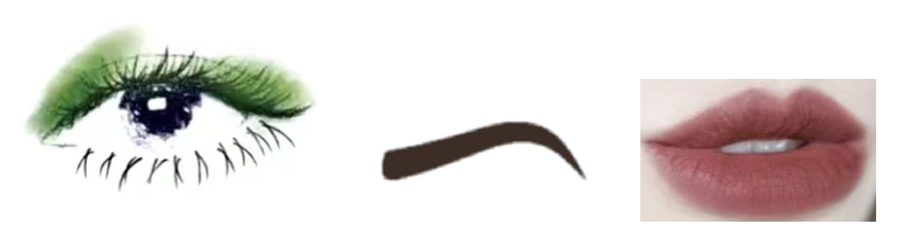
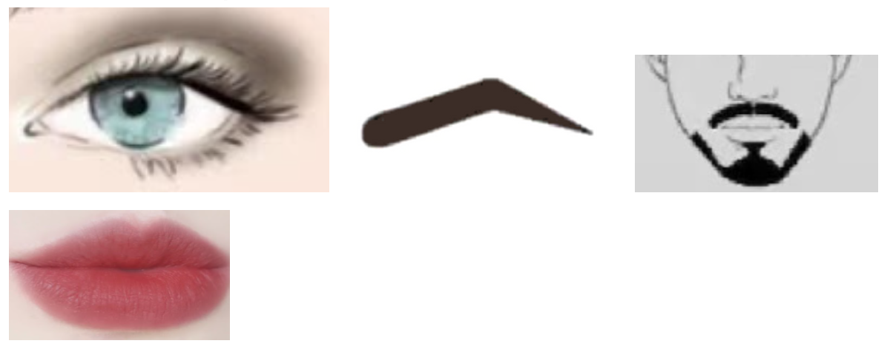
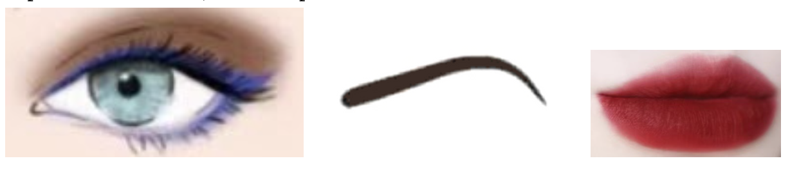
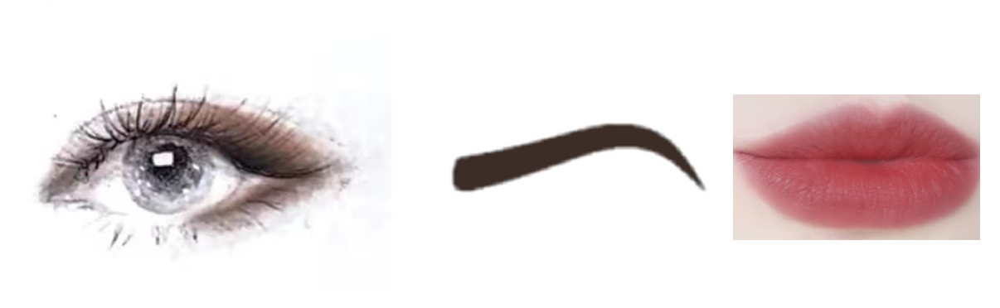
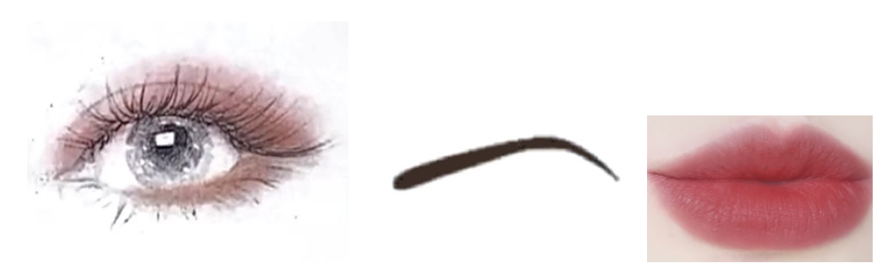
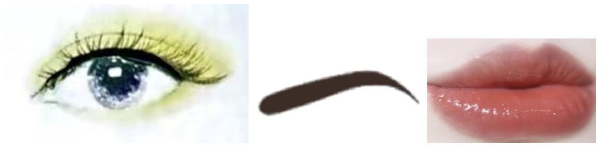
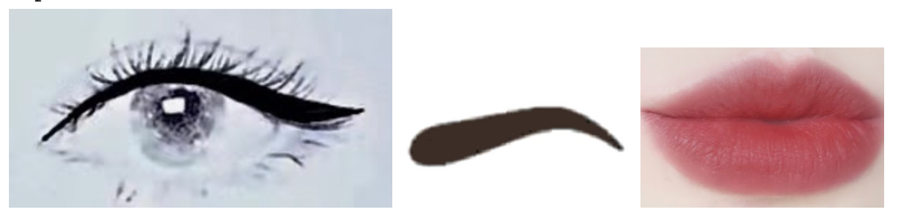

With the costume design mainly in green, consider to do a matching eye look. Fresh green color. Simple eye look. Do natural eyelashes based on the film background.
Eyebrows: Medium thick, medium arch.
Lips Color: Natural, less redness color. More to the eyes, less to the lips.

Rocky and Mr. Tweedy
Mens’ makeup on stage tends to have a darker shade. Choose deep brown, grey or use little black shade to blend. No need for heavy attention on eyelashes or eyeliner.
Main point is to add some depth to the eyes.
Both can add optional mustache.
Eyebrows: Thick, hard angle.
Lips Color: Natural color.
Mr. Tweedy should also use a tanner foundation based on his farmer’s setting. Add more bronzer to create his farmer’s look.

Mrs. Tweedy
Dark smokey eye makeup. Do put some thick eyeliner with the blend of dark colors like dark brown, grey, etc. Added some highlighting color on the lower lash line based on her character.
Eyebrows: Thin, medium arch.
Lips Color: Bold, red lips.

Supporting Characters
General Chicken, Babs, and Fowler
Uses dark brown color that enhances the characters but at the same time doesn’t make too much attraction.
Eyebrows: medium thick, medium arch.
Lips Color: Natural color, less distraction.

Bunty
Natural color bases. Adds more pink, red color based on brown eyeshadow. To create more of a female character. Matching with the costume idea of knitted cap.
Eyebrows: thin, low arch.
Lips Color: Natural color, less distraction.

Mac
With the braided hair, choose a light color. Light yellow with thin eyeliner.
Eyebrows: Medium thick, low arch.
Lips Color: Orange based color, matches yellow eyeshadow.

Nick and Fletcher
Brown based eyeshadow along with thick eyeliner. Adds more fun characteristics.
Eyebrows: Thick, low arch.
Lips Color: Natural.

Extras / Ensemble
Edwina and Extra Chickens
Use general chicken eye makeup. Brown color based.
Dogs
Based on general chicken eye makeup, add some animal prints on the cheek.